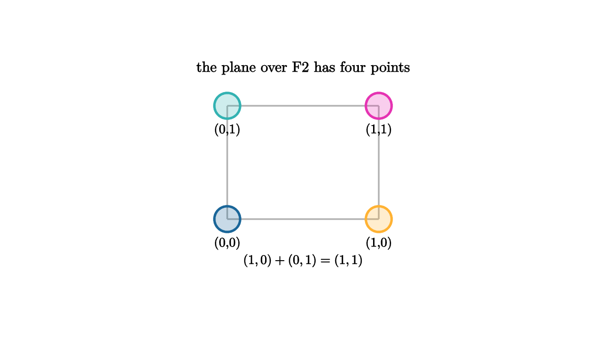

Linear Algebra Over Finite Fields
Linear algebra usually arrives with arrows in the plane and real-number coordinates. That picture is useful, but the axioms never demanded infinitely many scalars. A vector space can live over a finite field. Over the field with two elements, 0 and 1, addition is XOR and every vector is a string of bits.
This changes the geometry while keeping the algebra. Lines have only a few points. A plane over F_2 has four vectors. Three-dimensional space over F_2 has eight. Row reduction, span, basis, rank, nullspace, and linear maps all remain meaningful. The arithmetic table is small enough to fit in your head.

source
let Point = |pos, label, col| [
center{pos} fill{alpha{0.24} col} stroke{col, 3} Circle(0.17),
center{pos + 0.32d} Text(label, 0.62)
]
mesh scene = [
center{1.35u} Text("the plane over F2 has four points", 0.7),
stroke{LIGHT_GRAY, 2} Line([-1, -0.65, 0], [1, -0.65, 0]),
stroke{LIGHT_GRAY, 2} Line([-1, -0.65, 0], [-1, 0.85, 0]),
stroke{LIGHT_GRAY, 2} Line([-1, 0.85, 0], [1, 0.85, 0]),
stroke{LIGHT_GRAY, 2} Line([1, -0.65, 0], [1, 0.85, 0]),
Point([-1, -0.65, 0], "(0,0)", BLUE),
Point([1, -0.65, 0], "(1,0)", ORANGE),
Point([-1, 0.85, 0], "(0,1)", TEAL),
Point([1, 0.85, 0], "(1,1)", MAGENTA),
center{1.2d} Tex("(1,0)+(0,1)=(1,1)", 0.62)
]The first everyday use is parity. A parity bit is chosen so that a row of bits has even sum modulo 2. If the data bits are x_1, x_2, x_3, then one parity check can be written
This is a linear equation over F_2. A collection of parity checks is a matrix equation Hx = 0. The valid messages form the nullspace of H, which means error-correcting codes are linear subspaces with extra distance properties.
source
let Bit = |x, y, value, col| [
center{[x, y, 0]} fill{alpha{0.22} col} stroke{col, 3} Rect([0.46, 0.42]),
center{[x, y, 0]} Text(value, 0.62)
]
let CheckRow = |parity| [
Bit(-1.05, 0.25, "1", BLUE),
Bit(-0.35, 0.25, "0", BLUE),
Bit(0.35, 0.25, "1", BLUE),
Bit(1.05, 0.25, parity, ORANGE),
center{[0, -0.5, 0]} Tex("x_1+x_2+x_3+p=0", 0.62)
]
"Check"
mesh title = center{1.34u} Text("parity is a linear constraint", 0.68)
mesh row = CheckRow("0")
mesh note = center{1.14d} Text("the last bit is chosen by the equation", 0.62)
play Fade(0.7)
play Write(0.7)
"Correction"
row = CheckRow("1")
play Trans(1.0)
note = center{1.14d} Text("a changed syndrome points toward an error", 0.62)
play Trans(0.6)Over finite fields, Gaussian elimination becomes a digital operation. Add one row to another by XORing corresponding entries. Scaling by a nonzero scalar is automatic in F_2, since the only nonzero scalar is 1. Over larger finite fields such as F_5 or F_{256}, row operations include multiplication by field elements and their inverses.
Finite fields larger than prime fields are built by adjoining roots of irreducible polynomials. For example, F_{2^8} can be represented by binary polynomials modulo an irreducible degree eight polynomial. This is still linear algebra, just with bytes acting as field elements. That is why finite fields appear in Reed-Solomon codes, QR codes, storage systems, and network protocols.
The geometry has pleasant surprises. In a finite vector space, every subspace has a finite number of points. A k-dimensional subspace of F_q^n has q^k points. Counting subspaces leads to Gaussian binomial coefficients, the finite-field cousins of ordinary binomial coefficients. Projective geometry over finite fields gives finite worlds where every pair of lines meets after points at infinity are added.
Cryptography also leans heavily on this arithmetic. Elliptic curve cryptography often uses curves over finite fields. Points on the curve form a finite abelian group, and algorithms rely on the difficulty of reversing repeated group addition. The underlying coordinate computations are finite-field operations.
The main shift is conceptual. Real vector spaces model smooth quantities. Finite-field vector spaces model exact symbolic quantities: bits, packets, checks, masks, syndromes, and keys. A vector can be a message. A matrix can be an encoder. A nullspace can be a code. A linear map can scramble information while preserving enough structure to decode.
Once you accept finite fields as valid scalar worlds, abstract algebra becomes practical. It gives the same linear tools, then lets them run on discrete data with no rounding error and no continuum in sight.